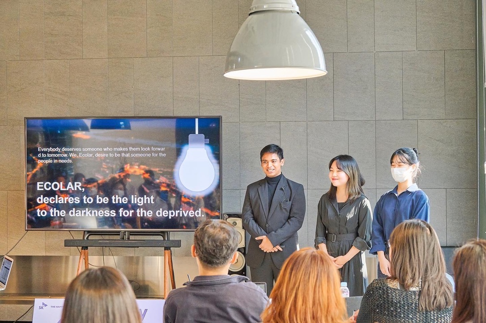

Awards
- Judge's Choice, Duke Climate Make-a-ton · 2026
- First prize, Hyundai H-on Dream Startup Contest · 2023
- First prize, SK NPO Startup Contest · 2022
- First prize, Renewable Energy Plant Location Optimization with GIS · 2022
- Honoree, SNU–German Embassy Climate Change Youth Conference · 2021
- Second prize, Appropriate Technology Design Contest · 2020
